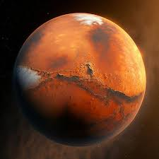
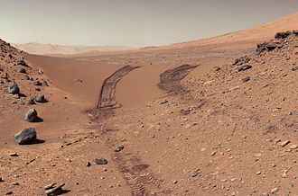
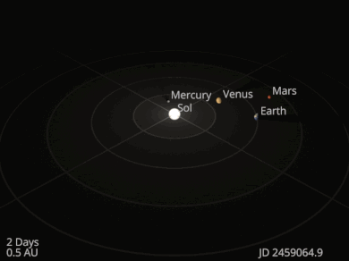

|
Scientists have theorized that during the Solar System's formation, Mars was created as the result of a random process
of run-away accretion of material from the protoplanetary disk that orbited the Sun. Mars has many distinctive chemical
features caused by its position in the Solar System. Elements with comparatively low boiling points, such as chlorine,
phosphorus, and sulfur, are much more common on Mars than on Earth; these elements were probably pushed outward by the
young Sun's energetic solar wind.
After the formation of the planets, the inner Solar System may have been subjected to the so-called Late Heavy Bombardment.
About 60% of the surface of Mars shows a record of impacts from that era, whereas much of the remaining surface is probably
underlain by immense impact basins caused by those events. However, more recent modeling has disputed the existence of the
Late Heavy Bombardment. There is evidence of an enormous impact basin in the Northern Hemisphere of Mars, spanning 10,600 by
8,500 kilometres (6,600 by 5,300 mi), or roughly four times the size of the Moon's South Pole–Aitken basin, which would be the
largest impact basin yet discovered if confirmed. The event, thought to be the cause of the Martian hemispheric dichotomy, created
the smooth Borealis basin that covers 40% of the planet.
Noachian period: Formation of the oldest extant surfaces of Mars, 4.5 to 3.5 billion years ago. Noachian age surfaces are scarred
by many large impact craters. The Tharsis bulge, a volcanic upland, is thought to have formed during this period, with extensive
flooding by liquid water late in the period. Named after Noachis Terra.
Hesperian period: 3.5 to between 3.3 and 2.9 billion years ago. The Hesperian period is marked by the formation of extensive lava plains.
Amazonian period: between 3.3 and 2.9 billion years ago to the present. Amazonian regions have few meteorite impact craters but are
otherwise quite varied. Olympus Mons formed during this period, with lava flows elsewhere on Mars. Named after Amazonis Planitia.
Geological activity is still taking place on Mars. The Athabasca Valles is home to sheet-like lava flows created about 200 million years ago.
Water flows in the grabens called the Cerberus Fossae occurred less than 20 million years ago, indicating equally recent volcanic intrusions.
The Mars Reconnaissance Orbiter has captured images of avalanches.
|
|
|
|
|
|
|
|

Mars to scale among the Inner Solar System planetary-mass objects beside the Sun,
arranged by the order of their orbits outward from the Sun.

Curiosity's view of Martian soil and boulders after crossing the "Dingo Gap" sand dune
|
|
Mars's average distance from the Sun is roughly 230 million km (143 million mi),
and its orbital period is 687 (Earth) days. The solar day (or sol) on Mars is only slightly
longer than an Earth day: 24 hours, 39 minutes, and 35.244 seconds. A Martian year is equal
to 1.8809 Earth years, or 1 year, 320 days, and 18.2 hours. The gravitational potential difference
and thus the delta-v needed to transfer between Mars and Earth is the second lowest for Earth.
The axial tilt of Mars is 25.19° relative to its orbital plane, which is similar to the axial tilt
of Earth. As a result, Mars has seasons like Earth, though on Mars they are nearly twice as long because
its orbital period is that much longer. In the present day, the orientation of the north pole of Mars is close to the star Deneb.
Mars has a relatively pronounced orbital eccentricity of about 0.09; of the seven other planets in the Solar System, only Mercury has a larger
orbital eccentricity. It is known that in the past, Mars has had a much more circular orbit. At one point, 1.35 million Earth years ago, Mars had
an eccentricity of roughly 0.002, much less than that of Earth today. Mars's cycle of eccentricity is 96,000 Earth years compared to Earth's cycle of 100,000 years.
Mars has its closest approach to Earth (opposition) in a synodic period of 779.94 days. It should not be confused with Mars conjunction, where the Earth and Mars are
at opposite sides of the Solar System and form a straight line crossing the Sun. The average time between the successive oppositions of Mars, its synodic period, is 780
days; but the number of days between successive oppositions can range from 764 to 812.
The distance at close approach varies between about 54 and 103 million km (34 and 64 million mi)
due to the planets' elliptical orbits, which causes comparable variation in angular size. At their furthest Mars and Earth can be as far as 401 million km (249 million mi)
apart.[191] Mars comes into opposition from Earth every 2.1 years. The planets come into opposition near Mars's perihelion in 2003, 2018 and 2035, with the 2020 and 2033 events
being particularly close to perihelic opposition.
| |
|
|
|
|
|
|

Orbit of Mars and other Inner Solar System planets
|